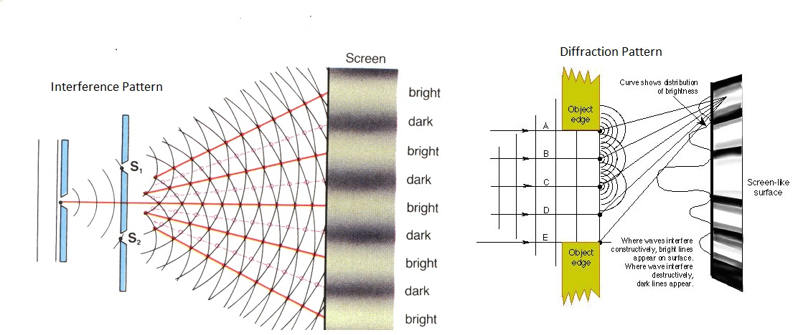
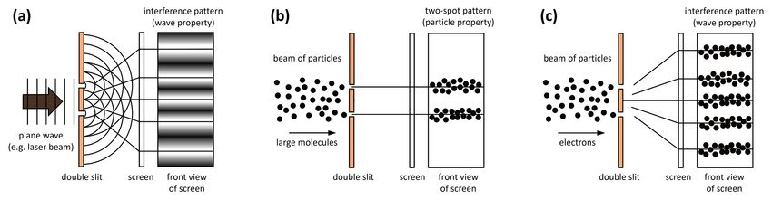

Particle-Wave Duality
You may have come across the light particle, photon; but, you may also have learnt about light waves. Have you ever wondered how light can be a particle and a wave? Before I explain this to you, and before I tell you how this was detected, going further in this article, always remember that when waves and particles behave like the other, they DON’T change, they are just waves that are exhibiting particle nature, or particles that are exhibiting wave nature.
Wave and Particle Natures
Let me define some key terms for you. Matter can be defined by two things, wave nature and particle nature. Wave nature is any properties that classify and define waves; namely, reflection (the ‘bouncing back’ of a wave across the imaginary normal), refraction (the change in direction of the wave depending on the density of the medium it is travelling through), diffraction (the spreading out of a wave by passing through a narrow aperture), and interference (the combining of two waves to form a new, resultant wave). Particle nature is the term for properties that define the actions done by particles; namely, energy transfer and the transfer of momentum. The Particle-Wave Duality says that particles can exhibit wave nature (not become waves), and the waves can exhibit particle nature (not become particles).
Light - An Example
Light, a part of the electromagnetic spectrum, is known to have diffracted and interfered with itself in the double slit experiment (which I will explain later on in the article), displaying its wave nature. However, it is also known to have transfered energy (for example, the Photoelectric Effect, where electrically charged particles are released), transferred momentum (for example, the Compton Effect, where photons bump into electrons and transfer momentum to it), and by Max Planck’s _____. So, light is a great example of something that works as a wave and particle.
Double Slit Experiment, and the Explanation for it

This is the Double Slit Experiment, which is at the centre of this concept. It is what proved the dual nature of particles and waves. So, what is happening here? There is a wall in front, with two slits on it, and another one behind, where you can see the patterns formed. In the first image, a wave is passed through these two slits. When you look at the pattern formed on the wall behind these slits, you see a dark-light frinches pattern. This happens because of the interference nature of a wave. Since the wave essentially splits into two new waves by passing through the two slits, there will be some instances where the peak of one wave will meet the trough of the other wave; this is where the waves will cancel out. But, there will also be places where the peaks of one wave meet the peaks of the other. That’s where these two waves will reinforce each other, and wherever these ‘reinforced’ part of the wave hits the wall, that is where the brighest light will be formed. This is shown by the straight lines in Diagram A, and this is how the dark-light frinches are formed.
Then, when you put a source that emits particles (let’s say, electrons), and this source is kept outside the same apparatus. Before looking at the new patterns formed on the wall, let us hypothesize. Normally, one would expect it to form two beams, roughly the same size as the slits, where the electrons will hit the back wall. To put that into perspective, think of the electrons as tennis balls. If you throw a number of tennis balls, you would expect it to hit the wall behind at approximately the same spots, depending on where they pass through the slits, and this is predicted by classical physics too. However, when you look at the pattern, you see that, unlike predicted by classical physics, you see the same dark-light frinches pattern you saw with the waves, on the wall behind (Diagram C). And if that wasn't weird enough, the same result takes place even if you emit A SINGLE electron at a time.
If you thought this was confusing, wait till you here the next part. Imagine sending single electrons through the slits again. But, this time, you are observing this while its happening. When you observe it, the electrons will act as particles (for easy visualization, tennis balls), and will form the pattern expected by classical physics. This is arguably the most intriguing and confusing part of quantum physics, and it is at the base of quantum physics.
Works Cited
- “Wave Particle Duality || 12th Class Physics - Chapter 19 || 2nd year physics.” Youtube, uploaded by The Base Academy, 29 March 2021, https://www.youtube.com/watch?v=lAOvTZgw-V8.
- “What is Wave-Particle Duality.” Byjus, https://byjus.com/physics/wave-particle-duality/. https://plus.maths.org/content/physics-minute-double-slit-experiment-0.
- The Physics arXiv Blog. “Physicists Smash Record For Wave-Particle Duality.” Medium.com, 8 November 2013, https://medium.com/the-physics-arxiv-blog/physicists-smash-record-for-wave-particle-duality-462c39db8e7b.
- “What is The Quantum Wave Function, Exactly.” Youtube, uploaded by Up and Atom, 12 December 2019, https://www.youtube.com/watch?v=EmNQuK-E0k.
- Britannica, The Editors of Encyclopaedia. "photoelectric effect". Encyclopedia Britannica, 11 Novmber 2022, https://www.britannica.com/science/photoelectric-effect.
- Britannica, The Editors of Encyclopaedia. "Compton effect". Encyclopedia Britannica, 19 July 2022, https://www.britannica.com/science/Compton-effect.